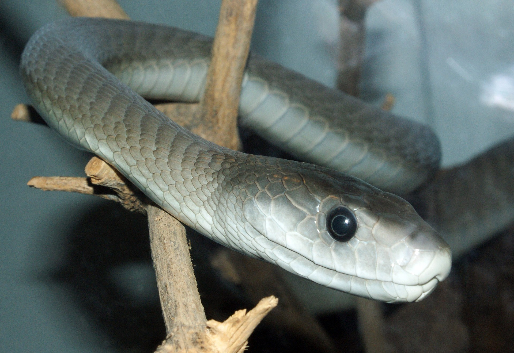
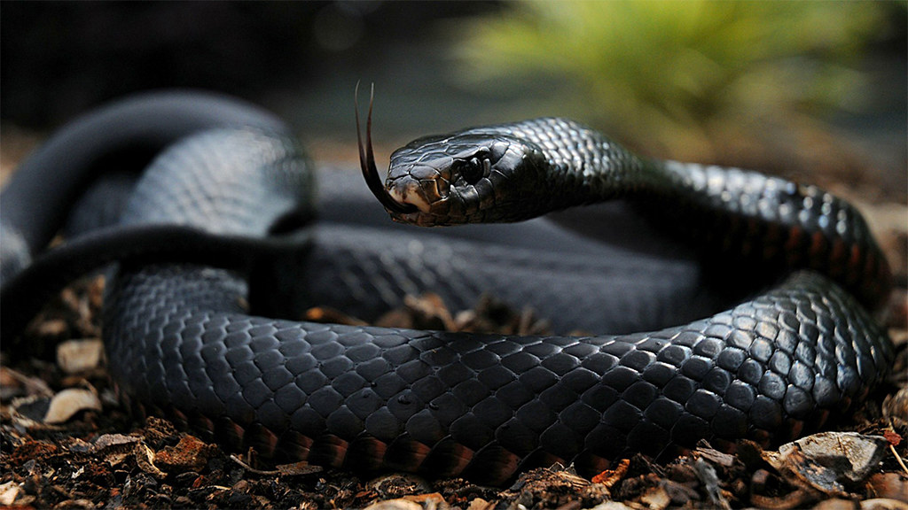

The black mamba is a species of highly venomous snake belonging to the family Elapidae. It is native to parts of sub-Saharan Africa. First formally described by Albert Günther in 1864, it is the second-longest venomous snake after the king cobra; mature specimens generally exceed 2 m and commonly grow to 3 m . Specimens of 4.3 to 4.5 m have been reported. Its skin colour varies from grey to dark brown. Juvenile black mambas tend to be paler than adults and darken with age.
What Is Their Life Cycle Like? The female black mamba will lay about one to two dozen eggs in a nest. The baby black mambas hatch three months later and are ready to live on their own right away. If they escape all of their predators, a black mamba can be expected to live for about 11 years in the wild.
Range and characteristics. Black mambas live in the savannas and rocky hills of southern and eastern Africa. They are Africa's longest venomous snake, reaching up to 14 feet in length, although 8.2 feet is more the average.
Black mambas typically eat small mammals and birds, though according to Blue Planet Biomes, there have been reports of mambas found with whole parrots or full-grown cobras in their stomachs.
https://live.staticflickr.com/5556/14707823092_fc246dc441_b.jpg
https://upload.wikimedia.org/wikipedia/commons/thumb/7/76/Dendroaspis_polylepis_%2814%29.jpg/1920px-Dendroaspis_polylepis_%2814%29.jpg
https://en.wikipedia.org/wiki/Black_mamba